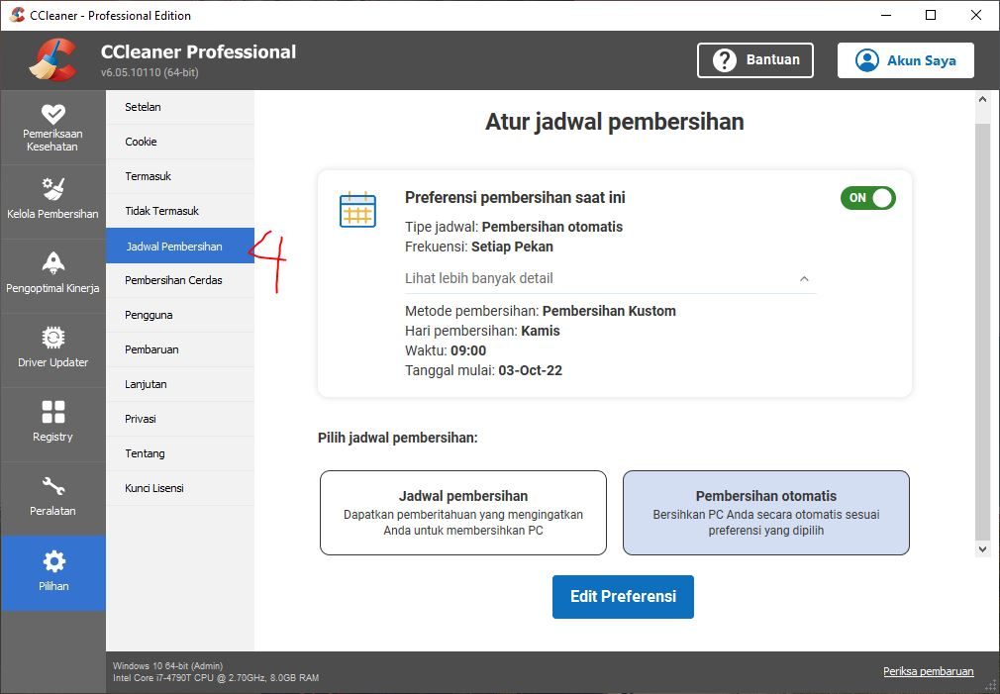
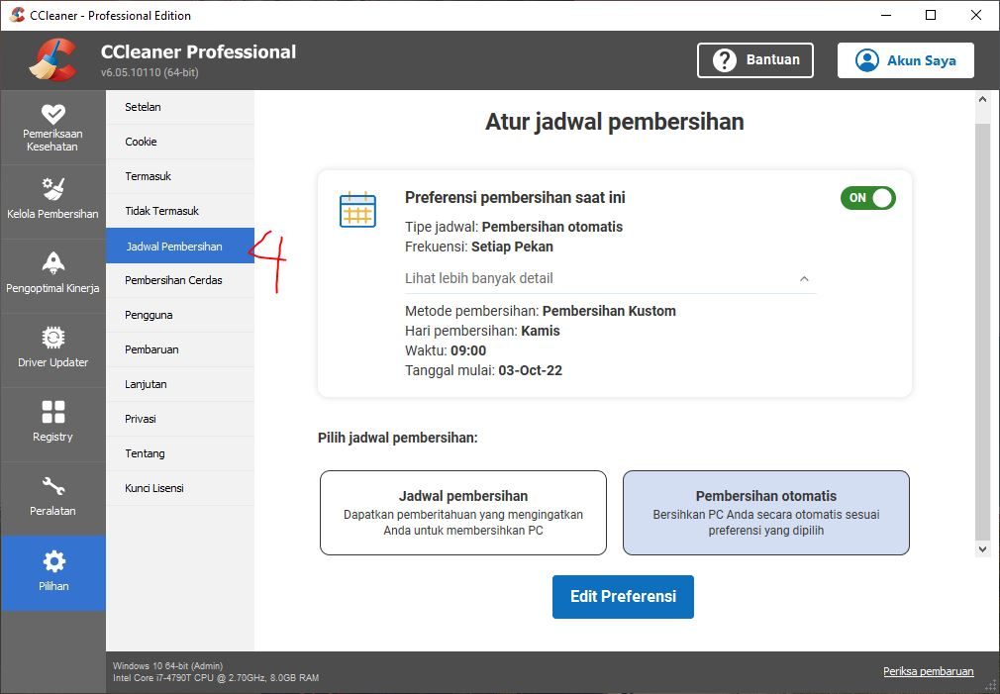

إذَا كَانَ فَاءُ تَفَعَّلَ وَتَفَاعَلَ تَاءً أَوْ ثَاءً أوْ دَالاً أوْ ذَالاَ أَوْ زَايًا أوْ سِيْنًا أَوْ شِيْنًا أَوْ صَادًا أَوْ ضَادًا أَوْ طَاءً أَوْ ظَاءً يَجُوْزُ قَلْبُ تَائِهِمَا بِمَا يُقَارِبُهُ فِِي الْمَخْرَجِ ثُمَّ أُدْغِمَتِ اْلاُوْلَى فِي الثَّانِيَّةِ بَعْدَ جَعْلِ أَوَّلِ الْمُتَقَارِبَيْنِ مِثْلَ الثَّانِيْ لِلْمُجَانَسَةِ مَعَ اجْتِلاَبِ هَمْزَةِ الْوَصْلِ لِيُمْكِنَ اْلاِبْتِدَاءُ بِالسَّاكِنِ نَحْوُ اِتَّرَسِ أّصْلُهُ تَتَرَّسَ وَاِثَّاقَلَ أّصْلُهُ تَثَاقَلَ وَاِدَّثَّرَ أّصْلُهُ تَدَثَّرَ واِذَّكَّرَ أّصْلُهُ تَذَكَّرَ وَاِزَّجَّرَ أّصْلُهُ تَزَجَّرَ وَاِسَّمَّعَ أّصْلُهُ تَسَمَّعَ وَاِشَّقَّقَ أصله تَشَقَّقَ وَ اِصَّدَّقَ أّصْلُهُ تَصَدَّقَ وَاِضَّرَّعَ أّصْلُهُ تَضَرَّعَ وَاِظَّهَّرَ أّصْلُهُ تَظَهَّرَ وَاِطَّاهَرَ أّصْلُهُ تَطَاهَرَ.
Bilamana Fa’ Fi’il wazan تَفَعَّلَ dan تَفَاعَلَ berupa huruf ت، ث، د، ذ، ز، س, ش, ص، ض, ط, ظ، maka boleh Ta’ dari kedua wazan tersebut diganti dengan huruf yang mendekati dalam Makhrajnya, kemudian huruf yang pertama di-idghamkan pada huruf yang kedua, demikian ini setelah huruf yang pertama dari kedua huruf yang berdekatan makhrajnya tersebut, dijadikan serupa dengan huruf yang kedua. berikut memasang Hamzah Washal agar memungkinkan permulaan dengan huruf mati. contoh: اِتَّرَسِ asalnya تَتَرَّسَ dan اِثَّاقَلَ asalnya تَثَاقَلَ dan اِدَّثَّرَ asalnya تَدَثَّرَ dan ذَّكَّرَ asalnya تَذَكَّرَ dan اِزَّجَّرَ asalnya تَزَجَّرَ dan اِسَّمَّعَ asalnya تَسَمَّعَ dan اِشَّقَّقَ asalnya تَشَقَّقَ dan اِصَّدَّقَ asalnya تَصَدَّقَ dan اِضَّرَّعَ asalnya تَضَرَّعَ dan اِظَّهَّرَ asalnya تَظَهَّرَ dan اِطَّاهَرَ asalnya تَطَاهَرَ .
Praktek I’lal :
اِتَّرَسَ
اِتَّرَسَ asalnya تَتَرَّسَ mengikuti wazan تَفَعَّلَ huruf Ta’ yang pertama disukunkan sebagai sebab syarat idgham maka menjadi تْتَرَّسَ maka Ta’ yang pertama di-idghamkan pada Ta’ yang kedua karena dua huruf sejenis, berikut mendatangkan Hamzah di permulaannya agar memungkinkan permulaan dengan huruf mati. Maka menjadi اِتَّرَسَ
اِثَّاقَلَ
اِثَّاقَلَ asalnya تَثَاقَلَ mengikuti wazan تَفَاعَلَ huruf Ta’ diganti Tsa’ karena berdekatan Makhrojnyamaka menjadi ثَثَاقَلَ kemudian huruf Tsa’ yang pertama disukunkan sebagai sebab syarat idgham maka menjadi ثَثَاقَلَ maka Tsa’ yang pertama di-idghamkan pada Tsa’ yang kedua karena dua huruf sejenis, berikut mendatangkan Hamzah di permulaannya agar memungkinkan permulaan dengan huruf mati. Maka menjadi اِثَّاقَلَ
Perhatian :
I’lal dalam Kaidah ke 19 ini cuma bersifat Jaiz atau boleh, bukan suatu ketentuan musti. Sebagai pengalaman bagi kita, karena ini jarang ditemukan. dan yang banyak digunakan adalah berupa bentuk asalnya.
DISCLAIMER:
Persiapan
backup dulu akun google crome jika lupa password bisa ganti padword terlebih dahulu. Jika tidak dimasukan akun chrome juga tidak masalah.
Kenapan ini perlu di lakukan?? Karena nanti secara otomatis akun chrome akan logout jadi jika buka email pasti disuruh masukin akun gmail.
Cara mengoptimalkan Kinerja Komputer dengan CCleaner